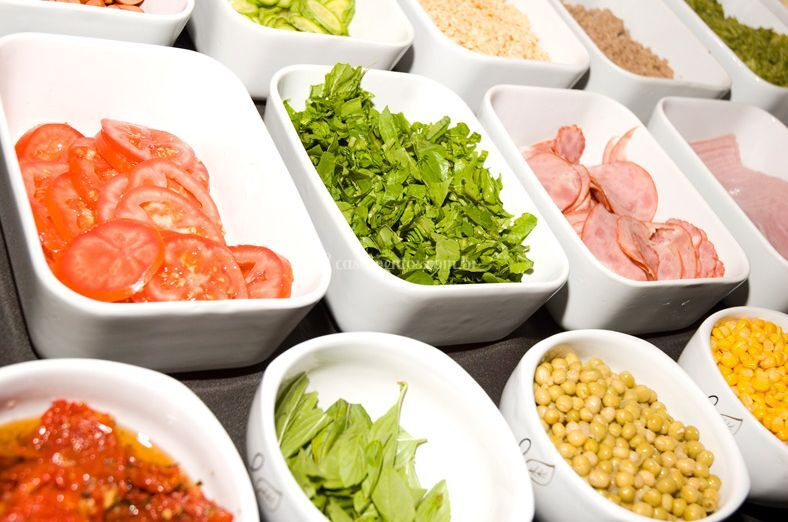

Первым шагом, к которому следует приступить, является приготовление теста.Да, приятно сделать все с нуля, и, несомненно, приготовление теста для пиццы - это определенный вид искусства.Хорошее и качественное тесто "У ЖАХИ"

Всегда свежие продукты
Начинка – это именно то, что отличает пиццу от всего остального. И если подойти ко всему с умом, то время приготовления можно без труда свести к минимуму, и вы получите готовое блюдо всего за несколько минут. Свежие овощи, такие как цуккини, тыкву, помидоры и грибы и вы получите отличное блюдо на ужин.